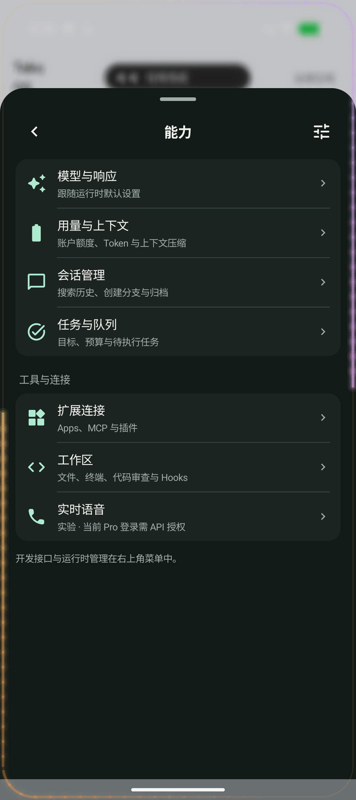

Native capabilities · Compact redesign
Physical Pixel 9 · v45 · Based on the Skills / Harness adjustments in the “Android image” conversation
7 home entries0 large buttons7 models on one screen
Seven common entries fit on one screen; development actions are in the top menu.

Changes and acceptance
- Capabilities home: grouped lists fit on one screen; redundant headings and inline Back controls removed.
- Models: single-choice list and one reasoning-level selector; selection and back navigation work.
- Settings: account, assistant, preferences, and screenshot switch fit on one screen; light/dark themes and title dialogs were exercised.
Native capabilities are retained. Experimental services keep their prior status; realtime cloud voice still requires API authorization. Enlarged fonts, TalkBack, and every experimental service were not fully tested.
Click an image to open the original. Existing Workspace Portal login protection remains.